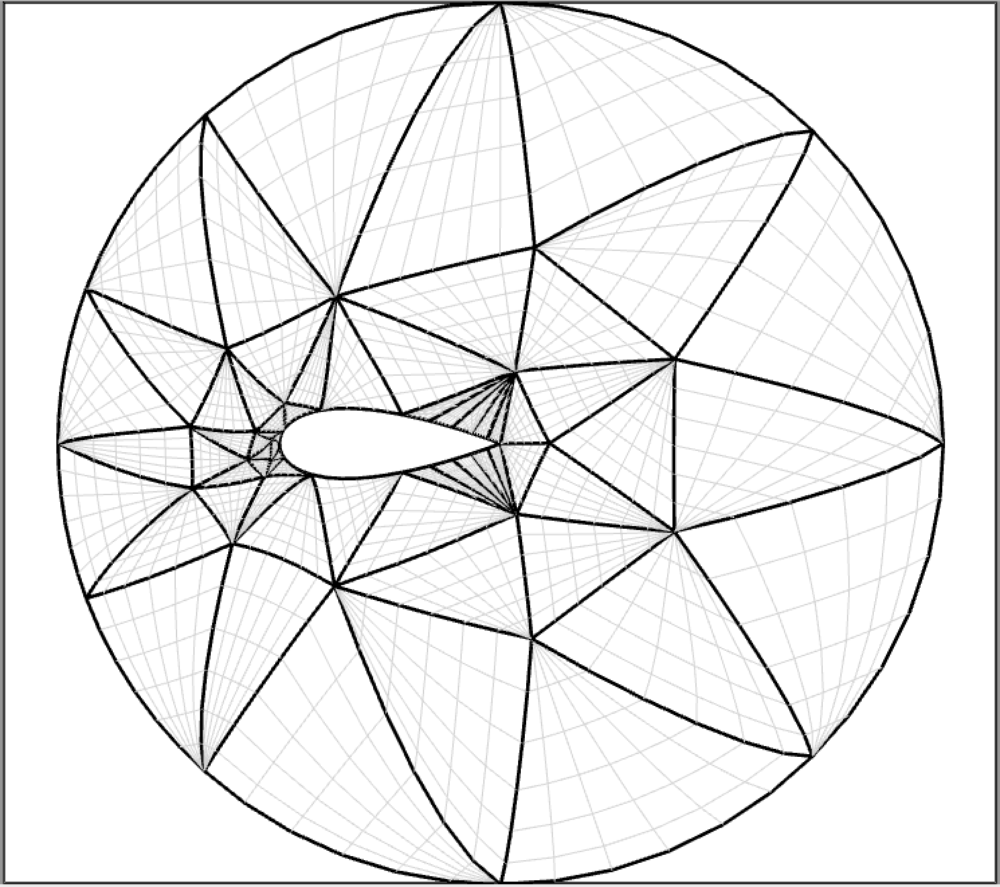

Geometric Modeling
Geological Structures
The geometric modeling of geological structures finds applications in oil exploration. These structures consist of "faults" and "horizons" with water-tight geometric partitioning (see the figure). We are currently working towards geometric modeling of the structures starting from input data with unorganized points obtained from images. Representing geometric surfaces (called "tears") that are continuous is some parts of the domain and discontinuous in the other parts is the main challenge in this work. The visualization of the geological structures described above also poses significant challenges towards making the model interactive in real time. This has also led us to carry out research in visualization, graphics, and numerical linear algebra. Thus, we will be looking at various techniques including hierarchical representation, preconditioners for linear solvers, and bounding-box techniques to render implicit surfaces efficiently.
Paper(s)
Brigham Bagley, Shankar P. Sastry, and Ross T. Whitaker, "A Marching-tetrahedra Algorithm for Feature-preserving Meshing of Piecewise-smooth Implicit Surfaces," in Proc. of the 25th International Meshing Roundtable, pp. 162-174, 2016 (link).
Mesh Generation
Volumetric Data
Patient-specific treatment is possible through processing of magnetic resonance (MR) or computer tomography (CT) images (registration, segmentation, etc.) to obtain volumetric data containing the geometry of internal organs. The challenges in this work included working with multi-material data and achieving size adaptively. Our research enabled generation of provably high-quality meshes by construction of a nonconforming background mesh that is appropriately warped or "cleaved" to conform to the boundary. Other main contribution of the work includes the development of a variational system to place vertices in the regions of interest as seen in the figure here. Vertex density requirement was met by assuming a background positive change density proportional to the input and running an n-body particle simulation in which the vertices were assumed to possess negative charge.
Paper(s)
Jonathan R. Bronson, Shankar P. Sastry, Joshua A. Levine, and Ross T. Whitaker, "Adaptive and unstructured mesh cleaving," in Proc. of the 23rd International Meshing Roundtable, pp. 266-278, 2014 (link).
Advancing-Front Delaunay Mesh Refinement
Delaunay triangulation and refinement is a theoretically guaranteed technique of generating high-quality meshes. The technique produces meshes with triangular (or tetrahedral elements) with empty circumscribing circles (or spheres). The algorithm incrementally inserts vertices in a poor-quality triangle to recompute a new triangulation with better quality. I have developed a Delaunay refinement technique in which I place vertices on input segments first and then insert vertices in the domain in an advancing front manner. My algorithms work with input domains with small angles too. They produce graded meshes whose elements' areas vary over the domain. The algorithms are significantly better than current state-of-the-art algorithms in terms of theoretical guarantees.
Paper(s)
Shankar P. Sastry. A 2D advancing-front delaunay mesh refinement algorithm. Computational Geometry, vol. 97, 2021 (link, arxiv).
Shankar P. Sastry. A 3D advancing-front delaunay mesh refinement algorithm. Computational Geometry, submitted, 2021 (arxiv).
Curvilinear Meshing

Curvilinear meshes are obtained by first generating straight-sided meshes and mapping the boundary vertices their respective locations on the curved boundaries. The interior vertices are subsequently interpolated to obtain a high-quality mesh. We use the RBF interpolation technique with the biharmonic kernel (thin plate splines) for this purpose. The main contribution of this work is the Taylor series-based reasoning why the RBF-based techniques with the biharmonic kernel have always yielded better-quality meshes when used for mesh morphing/warping/deformation.Paper(s)
Shankar P. Sastry, Vidhi Zala, Robert M. Kirby, "Thin-Plate-Spline Curvilinear Meshing on a Calculus-of-Variations Framework," in Proc. of the 24th International Meshing Roundtable, pp. 135-147, 2015 (link).
Vidhi Zala, Varun Shankar, Shankar P. Sastry and Robert M. Kirby, "Curvilinear Mesh Adaptation using Radial Basis Function Interpolation and Smoothing," Journal of Scientific Computing, 77 (1), 397-418, 2018 (link).
Mesh Adaptation
Numerical Analysis of Interpolation Error Bounds
The analysis of error in an FE simulation is an important step in validation and adaptation of our numerical experiments. Errors may arise due to several causes such as the discretization of the domain and the equations and the interpolation of the solution within a mesh element. Assessment of interpolation error bounds also provide insight into quality of a mesh element. Prior work has mainly focused on analysis of interpolation error within a linear mesh element. We extended the work to include theoretical error bounds within high-order straight-sided elements (see the figure), and we are currently extended the work to curved high-order elements as well. We were able to prove the results from the first principles using the Taylor series rather than the use of Bramble-Hilbert lemma. Our results can applied in adaptive refinement and quality improvement of high-order meshes.
Paper(s)
David Moxey, Shankar P. Sastry and Robert M. Kirby, "Interpolation error bounds for curved, high-order finite elements and their implications to adaptive mesh refinement," Journal of Scientific Computing, 78 (2), 1045-1062, 2019 (link).
S. P. Sastry and R. M. Kirby, "On interpolation errors over quadratic nodal triangular finite elements," in Proc. of the 22nd International Meshing Roundtable, pp. 349--366, 2013 (link).
Parallel Log-barrier Mesh Untangling and Quality Improvement Algorithm
The presence of even a few poor-quality mesh elements can negatively affect the stability, accuracy, and efficiency of an FE solver. Mesh quality improvement is carried out by vertex movement dictated by a numerical optimization algorithm (see the figure). We developed an interior point method-based worst element mesh untangling and quality improvement algorithm. We improved the quality of the worst element in the mesh (which may be inverted) by reformulating a nonsmooth unconstrained optimization problem into a smooth constrained optimization problem and solving the resulting problem using a log-barrier method. We show that the algorithm satisfies the Karush-Kuhn-Tucker (KKT) conditions, a set of first-order necessary conditions, at the point of convergence. We also developed a parallel implementation of the algorithm for distributed-memory machines that uses a greedy edge-coloring scheme to enable parallel data transfer.
Paper(s)
Shankar P. Sastry, Suzanne M. Shontz, Stephen A. Vavasis, "A log-barrier method for mesh quality improvement," Proc. of the 20th International Meshing Roundtable, pp. 329-346, 2011 (link).
Shankar P. Sastry, Suzanne M. Shontz, and Stephen A. Vavasis, "A log-barrier method for mesh quality improvement and untangling," invited submission to Engineering with Computers, vol. 30(3), pp. 315--329, 2014 (link).
Shankar P. Sastry and Suzanne M. Shontz, "A parallel log-barrier method for mesh quality improvement and untangling," invited submission to Engineering with Computers, vol. 30(4), pp. 503--515, 2014 (link).
Local Mesh Quality Improvement
In order to improve the quality of mesh elements, we move vertices in the mesh one by one such that the quality of the elements improves in the local vicinity. We answer the question of how to move vertices and which vertices to move first. We move vertices such that a vertex maximizes the minimum angle in the local star-shaped polygon. We choose vertices based on the inequality in the quality of the elements in the polygon and the direction of their gradients.
Paper(s)
Shankar P. Sastry, "Maximizing the Minimum Angle with the Insertion of Steiner Vertices," in Proc. of the 27th Canadian Conference on Computational Geometry, 2015 (link).
J Choi, H Kim, Shankar P Sastry, and Jibum Kim, "A deviation-based dynamic vertex reordering technique for 2D mesh quality improvement", Symmetry, 11 (7), 2019 (link).
Characterization of Mesh Quality Improvement Algorithms
We characterized some optimization techniques by analyzing their performance in several contexts such as inaccurate and accurate smoothing requirements and smoothing of graded, randomly-perturbed, and vertex-translated meshes. We also characterized the performance of linear solvers and preconditioners when the meshes were used to numerically solve isotropic, elliptic PDEs after the meshes were smoothed using various geometric quality metrics. The study resulted in context-specific assessment of performance of the mesh quality improvement techniques.Paper(s)
Jibum Kim, Shankar P. Sastry, and Suzanne M. Shontz, "A numerical investigation on the interplay among geometry, meshes, and linear algebra in the finite element solution of elliptic PDEs," invited submission to Engineering with Computers, vol. 28, pp. 431--450, 2012 (link).
Shankar P. Sastry and Suzanne M. Shontz, "Performance characterization of nonlinear optimization methods for mesh quality improvement," invited submission to Engineering with Computers, vol. 28(3), pp. 269--286, 2012 (link).
Jibum Kim, Shankar P. Sastry, and Suzanne M. Shontz, "Efficient solution of elliptic partial differential equations via effective combination of mesh quality metrics, preconditioners, and sparse linear solvers," in Proc. of the 19th International Meshing Roundtable, pp. 103-120, 2010 (link).
Shankar P. Sastry and Suzanne M. Shontz, "A Comparison of Gradient- and Hessian-Based Optimization Methods for Tetrahedral Mesh Quality Improvement," Proc. of the 18th International Meshing Roundtable, pp. 631-648, 2009 (link).
High Performance Computing
Cache Utilization
We worked on mesh element and vertex reordering techniques to improve the spatial locality for memory access pattern to improve cache utility in an implementation of a parallel algorithm that solves Laplace's equations in order to warp a mesh. We used graph theoretic (reverse Cuthill-McKee) and geometric (Hilbert space-filling curves as shown in the figure) techniques to reorder mesh elements and vertices in single- and multi-core environments. The reordering of vertices and elements to enable efficient partitioning of a mesh in a shared-memory processor for parallel processing in a multi-core environment. As a result of the data reordering, an improvement in cache utilization due to temporal locality was also observed. The improvement was observed for both stiffness matrix construction and the linear solver. Besides cache utilization, the performance of block Jacobi preconditioner also improved, i.e., fewer iterations were needed to converge to a solution, as a result of the reordering.
Paper(s)
Shankar P. Sastry, Emre U. Kultursay, Suzanne M. Shontz, and Mahmut T. Kandemir, "Mesh vertex- and element-reordering techniques for improved cache utilization in parallel mesh warping algorithms," invited submission to Engineering with Computers, vol. 30(4), pp. 535--547, 2014 (link).
Aggregation for AMG Preconditioners
Algebraic multigrid (AMG) preconditioners are used in solving sparse linear system arising from finite element meshes. The aggregation of degrees of freedom (nodes) in an AMG preconditioner can be carried out in a "top-down" or a "bottom-up" fashion. In a "top-down" technique, the nodes are recursively partitioned until the desired number of aggregates are obtained. In a "bottom-up" technique, the desired number of partitions are first formed using a set of nodes acting as seeds, and all other nodes associate themselves with one of the seed nodes based on their geometric or topological proximity. The aggregates then iteratively reorganize themselves by moving the seeds to the "center" of their respective aggregates, and other nodes reassociate themselves to the nearest seed. In this study, we found that our GPU-based "bottom-up" technique yields aggregates that are topologically convex, which results in faster solution time over "top-down" techniques.
Paper(s)
T. James Lewis, Shankar P. Sastry, Robert M. Kirby, Ross T. Whitaker, "A GPU-based MIS Aggregation Strategy", in Proc. of the 21st IEEE International Conference on High Performance Computing , pp 214-223, 2015 (link).
Application in Medicine
Patient-Specific Mesh Generation
 We developed a patient-specific mesh generation technique with application
to inferior vena cava (IVC) computational fluid dynamics (CFD) blood flow simulations.
Pulmonary embolism (PE) is a potentially fatal disease in which blood clots travel
from deep veins within the body and migrate to the lungs. When anti-coagulation
therapy fails (or is infeasible), a mechanical filter is surgically implanted in
the IVC in order to capture blood clots. Our technique generates patient-specific
meshes of the IVC and the IVC filter to facilitate blood flow simulations, which
provides surgical guidance to place the filter at a desirable
location.
This technique can also be used to model blood flow when stents are used to dilate
blood vessels. Our technique involves segmentation of patient computer
tomography (CT) images and virtual placement of a geometric model of an
IVC filter mesh created by a computer-aided design (CAD) software package.
The image segmentation extracts a model of the IVC and its adjacent veins,
and a surface mesh of the IVC is generated using the marching cubes algorithm.
The IVC filter mesh is virtually placed in the IVC surface mesh by modeling the
superelastic properties of IVC filter and the approximated linear elastic properties
of the IVC. A volume mesh is generated using the advancing front technique
as shown in the figure.
We developed a patient-specific mesh generation technique with application
to inferior vena cava (IVC) computational fluid dynamics (CFD) blood flow simulations.
Pulmonary embolism (PE) is a potentially fatal disease in which blood clots travel
from deep veins within the body and migrate to the lungs. When anti-coagulation
therapy fails (or is infeasible), a mechanical filter is surgically implanted in
the IVC in order to capture blood clots. Our technique generates patient-specific
meshes of the IVC and the IVC filter to facilitate blood flow simulations, which
provides surgical guidance to place the filter at a desirable
location.
This technique can also be used to model blood flow when stents are used to dilate
blood vessels. Our technique involves segmentation of patient computer
tomography (CT) images and virtual placement of a geometric model of an
IVC filter mesh created by a computer-aided design (CAD) software package.
The image segmentation extracts a model of the IVC and its adjacent veins,
and a surface mesh of the IVC is generated using the marching cubes algorithm.
The IVC filter mesh is virtually placed in the IVC surface mesh by modeling the
superelastic properties of IVC filter and the approximated linear elastic properties
of the IVC. A volume mesh is generated using the advancing front technique
as shown in the figure.
Paper(s)
Kenneth I. Aycock, Robert L. Campbell, Keefe B. Manning, Shankar P. Sastry, Suzanne M. Shontz, Frank C. Lynch, and Brett A. Craven, "A computational method for predicting inferior vena cava filter performance on a patient-specific basis," Journal of Biomechanical Engineering, vol. 136(8), 2014 (link).
Shankar P. Sastry, Jibum Kim, Suzanne M. Shontz, Brent A. Craven, Frank C. Lynch, Keefe B. Manning, and Thap Panitanarak, "Patient-specific model generation and simulation for pre-operative surgical guidance for pulmonary embolism treatment," Invited submission to Image-Based Modeling and Mesh Generation, vol. 3, pp. 223--249, 2013 (link).